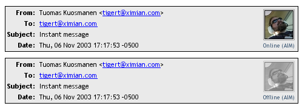
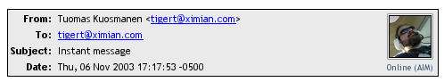
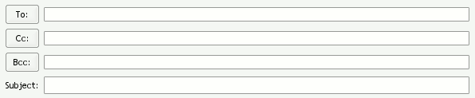

| Task Name | Bounty | Funded By |
|---|---|---|
| Gaim/Evolution presence integration | $2000 | Novell |
| Solved: Gaim drag and drop file transfer | $400 | Novell |
| Solved: Gaim drag and drop of links | $250 | Novell |
| Solved: Handle aim: links in Firefox | $100 | Novell |
We want the notion of "presence" to be integrated into the entire desktop, wherever the user encounters a person or a reference to a person.
Providing a simple integrated presence concept in the mailer and addressbook user interfaces is a step in this direction.
Post-2.0, Evolution will begin to integrate presence functionality into the backend addressbook APIs. That means that given a contact, you'll be able to programmatically ask the addressbook questions like: "Is this user online?" and "How can I send him a file?"
That is our eventual goal. This task is focused on more surface, frontend integration.
This item has several subtasks, all of which involve displaying an icon somewhere in Evolution to indicate whether a person is online or not, and to allow the user to click on this icon to open an IM conversation window with the person concerned.
And so, the first challenge is to have a simple, general mechanism for displaying presence icons.
online |
offline |
away |
| You don't have to use exactly these icons or exactly these meanings. This is just to give a general idea, and an example of what to use in case the user doesn't have a buddy icon set. We can design better suitable icons if needed. | ||
The presence icon could be the "Buddy Icon" from Gaim. It represents the other person well since everyone can control and update their own buddy-icon. We can show online/offline/away status with a text label below the icon, plus for "away" we can desaturate the icon and make it 50% transparent. Examples are below.

The Presence Icon can be used to invoke the appropriate gaim-remote mechanisms to pop up an IM window with the user.
Evolution 2.0's addressbook allows the user to set a custom picture for an addressbook entry. This custom image should override the buddy icon if it is set.
Here are the places where a presence icon should be added to Evolution:

First you will need to allow Evolution to determine if someone is online. You may wish to work with gaim-remote, a command-line tool which communicates with a running gaim process over a local Unix domain socket.
You will want to extend the gaim-remote protocol to support the "ison" mechanism. You may also want to separate gaim-remote into a library, maybe called libgaimremote and a front-end command line tool. Evolution and gaim-remote will both use libgaimremote, which should expose a non-blocking API.
On top of this library, you will want to build a widget which handles all the rendering and interaction associated with a presence icon. This widget could probably exist inside Evolution at first, though eventually it would be ideal if it were available to the entire desktop.
Then you need to use this API to add the icons to various places where addresses are displayed and formatted, including:
For those protocols that support it, Gaim allows you to send and receive files with other IM users. Currently, you have to right click on the user in the Gaim buddy list and select the "Send file" popup menu entry to send the user a file.
This task is to modify Gaim to support drag-and-drop as a means of initiating a file transfer to a user. Dragging a file from the file manager or desktop and dropping it onto a Gaim conversation window should initiate a transfer of that file to the user.
One subtlety is how .desktop files are handled. The contents of the .desktop file are probably not what the user wants to send, so you'll have to figure out how to handle these.
This one is pretty straightforward: Make it so that dragging a URL from the browser or the desktop onto a Gaim conversation window copies the URL into the text of the conversation.
{kind=link}